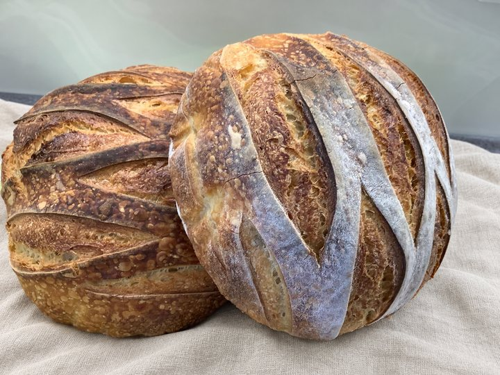
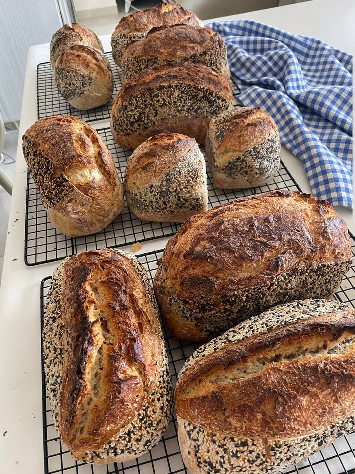
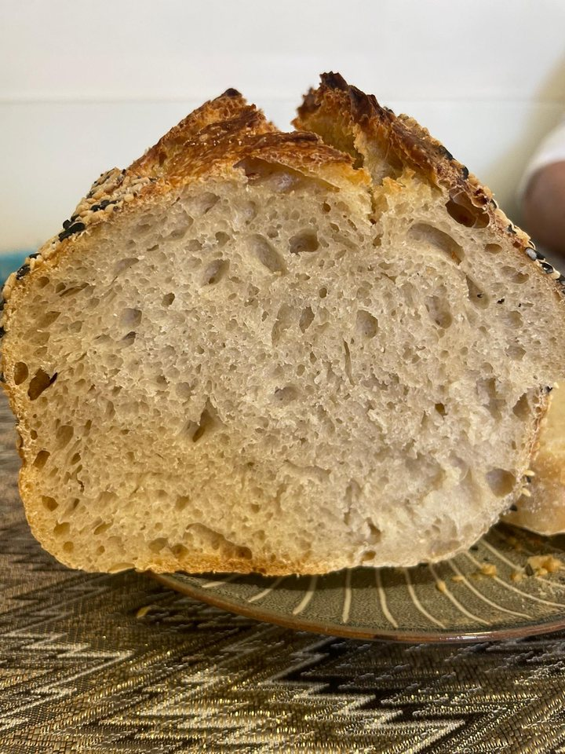

תפריטMenu
טרי מהתנורFresh from the oven
לחמי מחמצת כוסמיןSpelt sourdough loaves
- קלאסיPlain₪65

- עם גרעיניםSeeded₪69

- עגבניות מיובשות ועשבי תיבולDried tomato & herbs₪74

- זיתיםOlives₪74

- אגוזי מלך וחמוציותWalnut & cranberry₪76

פוקאצ׳הFocaccia
- מלח גסPlain salt₪35

- שום ועשבי תיבולGarlic & herbs₪40

- זיתיםOlives₪40

מקלות לחםBreadsticks
- עם גרעיניםSeeded₪50

המחירים בשקלים (₪).Prices in shekels (₪).
להזמנותOrder here
איסוף בירושלים · פרטים בהודעהPickup in Jerusalem · message for details
המלצותReviews
אהבתם את הלחם?Loved the bread?
כתבו לדבורה כמה מילים, נשמח לשתף אותן כאן.Send Devorah a few words. We’d love to share them here.
שלחו לדבורה המלצהSend Devorah a reviewעל המחמצתSourdough facts
שלושה מרכיבים והרבה זמןThree ingredients, a lot of time
מחמצת אמיתית עשויה משלושה מרכיבים בלבד: קמח, מים ומלח. הבצק תופח לאט, במשך שעות ארוכות, בעזרת מחמצת טבעית של שמרי בר במקום שמרים תעשייתיים.
התסיסה הארוכה עושה יותר מאשר לתת ללחם את הטעם העמוק והקרום הלעיס. היא גם מפרקת חלק מהגלוטן ומהפחמימות הקשות לעיכול שבקמח, ולכן אנשים רבים מרגישים שלחם מחמצת עדין יותר לקיבה. התסיסה גם מפחיתה את החומצה הפיטית, וכך עוזרת לגוף לספוג יותר מהברזל, האבץ והמגנזיום שבדגן.
ללחם מחמצת יש בדרך כלל אינדקס גליקמי נמוך יותר מלחם רגיל, כך שהוא משחרר אנרגיה בצורה הדרגתית יותר, והחומציות הטבעית שלו שומרת עליו טרי לאורך זמן, בלי חומרים משמרים.
אוכל איטי, בעבודת יד, כמו שלחם אמור להיות.
Real sourdough is made from just three ingredients: flour, water and salt. It rises slowly over many hours with a natural wild-yeast starter instead of commercial yeast.
That long fermentation does more than create its deep flavour and chewy crust. It also breaks down part of the gluten and some of the hard-to-digest carbohydrates in the flour, which is why many people find sourdough gentler on the stomach. Fermentation also reduces phytic acid, helping your body absorb more of the iron, zinc and magnesium in the grain.
Sourdough tends to have a lower glycemic index than ordinary bread, so it releases energy more steadily, and its natural acidity keeps it fresh longer without any preservatives.
Slow food, made by hand, the way bread was meant to be.